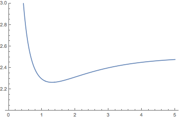
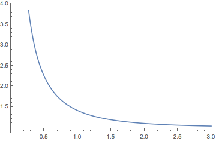

In a renewal reward process, each interarrival time is associated with a random variable that is generically thought of as the reward associated with that interarrival time. Our interest is in the process that gives the total reward up to time \( t \). So let's set up the usual notation. Suppose that \( \bs{X} = (X_1, X_2, \ldots) \) are the interarrival times of a renewal process, so that \( \bs{X} \) is a sequence of independent, identically distributed, nonnegative variables with common distribution function \( F \) and mean \( \mu \). As usual, we assume that \( F(0) \lt 1 \) so that the interarrival times are not deterministically 0, and in this section we also assume that \( \mu \lt \infty \). Let \[ T_n = \sum_{i=1}^n X_i, \quad n \in \N \] so that \( T_n \) is the time of the \( n \)th arrival for \( n \in \N_+ \) and \( \bs{T} = (T_0, T_1, \ldots) \) is the arrival time sequence. Finally, Let \[ N_t = \sum_{n=1}^\infty \bs{1}(T_n \le t), \quad t \in [0, \infty) \] so that \( N_t \) is the number of arrivals in \( [0, t] \) and \(\bs{N} = \{N_t: t \in [0, \infty)\}\) is the counting process. As usual, let \( M(t) = \E\left(N_t\right) \) for \( t \in [0, \infty) \) so that \( M \) is the renewal function.
Suppose now that \( \bs{Y} = (Y_1, Y_2, \ldots) \) is a sequence of real-valued random variables, where \( Y_n \) is thought of as the reward associated with the interarrival time \( X_n \). However, the term reward should be interpreted generically since \( Y_n \) might actually be a cost or some other value associated with the interarrival time, and in any event, may take negative as well as positive values. Our basic assumption is that the interarrival time and reward pairs \( \bs{Z} = \left((X_1, Y_1), (X_2, Y_2), \ldots\right) \) form an independent and identically distributed sequence. Recall that this implies that \( \bs{X} \) is an IID sequence, as required by the definition of the renewal process, and that \( \bs{Y} \) is also an IID sequence. But \( \bs{X} \) and \( \bs{Y} \) might well be dependent, and in fact \( Y_n \) might be a function of \( X_n \) for \( n \in \N_+ \). Let \( \nu = \E(Y) \) denote the mean of a generic reward \( Y \), which we assume exists in \( \R \).
The stochastic process \( \bs{R} = \{R_t: t \in [0, \infty)\} \) defined by \[ R_t = \sum_{i=1}^{N_t} Y_i, \quad t \in [0, \infty) \] is the reward renewal process associated with \( \bs{Z} \). The function \( r \) given by \( r(t) = \E(R_t) \) for \( t \in [0, \infty) \) is the reward function.
As promised, \( R_t \) is the total reward up to time \( t \in [0, \infty) \). Here are some typical examples:
So \( R_t \) is a random sum of random variables for each \( t \in [0, \infty) \). In the special case that \( \bs{Y} \) and \( \bs{X} \) independent, the distribution of \( R_t \) is known as a compound distribution, based on the distribution of \( N_t \) and the distribution of a generic reward \( Y \). Specializing further, if the renewal process is Poisson and is independent of \( \bs{Y} \), the process \( \bs{R} \) is a compound Poisson process.
Note that a renewal reward process generalizes an ordinary renewal process. Specifically, if \( Y_n = 1 \) for each \( n \in \N_+ \), then \( R_t = N_t \) for \( t \in [0, \infty) \), so that the reward process simply reduces to the counting process, and then \( r \) reduces to the renewal function \( M \).
For \( t \in (0, \infty) \), the average reward on the interval \( [0, t] \) is \( R_t / t \), and the expected average reward on that interval is \( r(t) / t \). The fundamental theorem on renewal reward processes gives the asymptotic behavior of these averages.
The renewal reward theorem
Part (a) of generalizes the law of large numbers and part (b) generalizes elementary renewal theorem, for a basic renewal process. Once again, if \( Y_n = 1 \) for each \( n \), then (a) becomes \( N_t / t \to 1/\mu \) as \( t \to \infty \) and (b) becomes \( M(t) / t \to 1 /\mu \) as \( t \to \infty \). It's not surprising then that these two theorems play a fundamental role in the proof of the renewal reward theorem.
The renewal reward process \( \bs{R} = \{R_t: t \in [0, \infty)\} \) in is constant, taking the value \( \sum_{i=1}^n Y_i \), on the renewal interval \( [T_n, T_{n+1}) \) for each \( n \in \N \). Effectively, the rewards are received discretely: \( Y_1 \) at time \( T_1 \), an additional \( Y_2 \) at time \( T_2 \), and so forth. It's possible to modify the construction so the rewards accrue continuously in time or in a mixed discrete/continuous manner. Here is a simple set of conditions for a general reward process.
Suppose again that \( \bs{Z} = ((X_1, Y_1), (X_2, Y_2), \ldots) \) is the sequence of interarrival times and rewards. A stochastic process \( \bs{V} = \{V_t: t \in [0, \infty)\}\) (on our underlying probability space) is a reward process associated with \( \bs{Z}\) if the following conditions hold:
In the continuous case, with nonnegative rewards (the most important case), the reward process will typically have the following form:
Suppose that the rewards are nonnegative and that \( \bs{U} = \{U_t: t \in [0, \infty)\} \) is a nonnegative stochastic process (on our underlying probability space) with
Let \( V_t = \int_0^t U_s \, ds \) for \(t \in [0, \infty) \). Then \( \bs{V} = \{V_t: t \in [0, \infty)\} \) is a reward process associated with \( \bs{Z} \).
By the additivity of the integral and (b), \( V_{T_n} = \sum_{i=1}^n Y_i \) for \( n \in \N \). Since \( \bs{U} \) is nonnegative, \( \bs{V} \) is increasing, so \( V_{T_n} \le V_t \le V_{T_{n+1}} \) for \( t \in \left(T_n, T_{n+1}\right) \)
So in this special case, the rewards are being accrued continuously and \( U_t \) is the rate at which the reward is being accrued at time \( t \). So \( \bs{U} \) plays the role of a reward density process. For a general reward process, the basic renewal reward theorem still holds.
Suppose that \( \bs{V} = \{V_t: t \in [0, \infty)\} \) is a reward process associated with \( \bs{Z} = ((X_1, Y_1), (X_2, Y_2), \ldots) \), and let \( v(t) = \E\left(V_t\right) \) for \( t \in [0, \infty) \) be the corresponding reward function.
Suppose first that the reward variables \( Y \) are nonnegative. Then \[ \frac{R_t}{t} \le \frac{V_t}{t} \le \frac{R_t}{t} + \frac{Y_{N_t + 1}}{t} \] From the proof of the renewal reward theorem in , \( R_t / t \to \nu / \mu \) as \( t \to \infty \) with probability 1, and \( Y_{N_t + 1} \big/ t \to 0\) as \( t \to \infty \) with probability 1. Hence (a) holds. Taking expected values, \[ \frac{r(t)}{t} \le \frac{v(t)}{t} \le \frac{r(t)}{t} + \frac{\E\left(Y_{N_t + 1}\right)}{t} \] But again from the renewal reward theorem above, \( r(t) / t \to \nu / \mu \) as \( t \to \infty \) and \( E\left(Y_{N_t + 1}\right) \big/ t \to 0 \) as \( t \to \infty \). Hence (b) holds. A similar argument works if the reward variables are negative. If the reward variables take positive and negative values, we split the variables into positive and negative parts in the usual way.
Here is the corollary for a continuous reward process.
Suppose that the rewards are positive, and consider the continuous reward process with density process \( \bs{U} = \{U_t: t \in [0, \infty)\} \) as in . Let \( u(t) = \E(U_t) \) for \( t \in [0, \infty) \). Then
With a clever choice of the rewards
, many interesting renewal processes can be turned into renewal reward processes, leading in turn to interesting limits via the renewal reward theorem.
Recall that in an alternating renewal process, a system alternates between on and off states (starting in the on state). If we let \( \bs{U} = (U_1, U_2, \ldots) \) be the lengths of the successive time periods in which the system is on, and \( \bs{V} = (V_1, V_2, \ldots) \) the lengths of the successive time periods in which the system is off, then the basic assumptions are that \( ((U_1, V_1), (U_2, V_2), \ldots) \) is an independent, identically distributed sequence, and that the variables \( X_n = U_n + V_n \) for \( n \in \N_+ \) form the interarrival times of a standard renewal process. Let \( \mu = \E(U) \) denote the mean of a time period that the device is on, and \( \nu = \E(V) \) the mean of a time period that the device is off. Recall that \( I_t \) denotes the state (1 or 0) of the system at time \( t \in [0, \infty) \), so that \( \bs{I} = \{I_t: t \in [0, \infty)\} \) is the state process. The state probability function \( p \) is given by \( p(t) = \P(I_t = 1) \) for \( t \in [0, \infty) \).
Limits for the alternating renewal process.
Consider the renewal reward process where the reward associated with the interarrival time \( X_n \) is \( U_n \), the on period for that renewal period. The rewards \( U_n \) are nonnegative and clearly \( \int_{T_n}^{T_{n+1}} I_s \, ds = U_{n+1} \). So \( t \mapsto \int_0^t I_s \, ds \) for \( t \in [0, \infty) \) defines a continuous reward process of the form in . Parts (a) and (b) follow directly from the reward renewal theorem in .
Thus, the asymptotic average time that the device is on, and the asymptotic mean average time that the device is on, are both simply the ratio of the mean of an on period to the mean of an on-off period. In our previous study of alternating renewal processes, the fundamental result was that in the non-arithmetic case, \( p(t) \to \mu / (\mu + \nu) \) as \( t \to \infty \). This result implies part (b) in the theorem above.
Renewal reward processes can be used to derive some asymptotic results for the age processes of a standard renewal process. So suppose that we have a renewal process with interarrival sequence \( \bs{X} \), arrival sequence \( \bs{T} \), and counting process \( \bs{N} \). As usual, let \( \mu = \E(X)\) denote the mean of an interarrival time, but now we will also need \( \nu = \E(X^2) \), the second moment. We assume that both moments are finite.
For \( t \in [0, \infty) \), recall that the current life, remaining life and total life at time \( t \) are \[ A_t = t - T_{N_t}, \quad B_t = T_{N_t + 1} - t, \quad L_t = A_t + B_t = T_{N_t+1} - T_{N_t} = X_{N_t + 1} \] respectively. In the usual terminology of reliability, \( A_t \) is the age of the device in service at time \( t \), \( B_t \) is the time remaining until this device fails, and \( L_t \) is total life of the device. (To avoid notational clashes, we are using different notation than in past sections.) Let \( a(t) = \E(A_t) \), \( b(t) = \E(B_t) \), and \( l(t) = \E(L_t) \) for \( t \in [0, \infty) \), the corresponding mean functions. To derive our asymptotic results, we simply use the current life and the remaining life as reward densities (or rates) in a renewal reward process.
Limits for the current life process.
Consider the renewal reward process where the reward associated with the interarrival time \( X_n \) is \(\frac{1}{2} X_n^2\) for \( n \in \N \). The process \( t \mapsto \int_0^t A_s \, ds \) for \( t \in [0, \infty) \) is a continuous reward process for this sequence of rewards, as defined in . To see this, note that for \( t \in \left[T_n, T_{n+1}\right) \), we have \( A_t = t - T_n \), so with a change of variables and noting that \( T_{n+1} = T_n + X_{n+1} \) we have \[ \int_{T_n}^{T_{n+1}} A_t \, dt = \int_0^{X_{n+1}} s \, ds = \frac{1}{2} X_{n+1}^2 \] The results now follow from the renewal reward theorem in .
Limits for the remaining life process.
Consider again the renewal reward process where the reward associated with the interarrival time \( X_n \) is \(\frac{1}{2} X_n^2\) for \( n \in \N \). The process \( t \mapsto \int_0^t B_s \, ds \) for \( t \in [0, \infty) \) is a continuous reward process for this sequence of rewards, as defined in . To see this, note that for \( t \in \left[T_n, T_{n+1}\right) \), we have \( B_t = T_{n+1} - t \), so once again with a change of variables and noting that \( T_{n+1} = T_n + X_{n+1} \) we have \[ \int_{T_n}^{T_{n+1}} B_t \, dt = \int_0^{X_{n+1}} s \, ds = \frac{1}{2} X_{n+1}^2 \] The results now follow from the renewal reward theorem in .
With a little thought, it's not surprising that the limits for the current life and remaining life processes are the same. After a long period of time, a renewal process looks stochastically the same forward or backward in time. Changing the arrow of time
reverses the role of the current and remaining life. Asymptotic results for the total life process now follow trivially from the results for the current and remaining life processes.
Limits for the total life process
Consider again a standard renewal process as defined in the introduction, with interarrival sequence \( \bs{X} = (X_1, X_2, \ldots) \), arrival sequence \( \bs{T} = (T_0, T_1, \ldots) \), and counting process \( \bs{N} = \{N_t: t \in [0, \infty)\} \). One of the most basic applications is to reliability, where a device operates for a random lifetime, fails, and then is replaced by a new device, and the process continues. In this model, \( X_n \) is the lifetime and \( T_n \) the failure time of the \( n \)th device in service, for \( n \in \N_+ \), while \( N_t \) is the number of failures in \( [0, t] \) for \( t \in [0, \infty) \). As usual, \( F \) denotes the distribution function of a generic lifetime \( X \), and \( F^c = 1 - F \) the corresponding right distribution function (reliability function). Sometimes, the device is actually a system with a number of critical components—the failure of any of the critical components causes the system to fail.
Replacement models are variations on the basic model in which the device is replaced (or the critical components replaced) at times other than failure. Often the cost \( a \) of a planned replacement is less than the cost \( b \) of an emergency replacement (at failure), so replacement models can make economic sense. We will consider the the most common model.
In the age replacement model, the device is replaced either when it fails or when it reaches a specified age \( s \in (0, \infty) \). This model gives rise to a new renewal process with interarrival sequence \( \bs{U} = (U_1, U_2, \ldots) \) where \( U_n = \min\{X_n, s\} \) for \( n \in \N_+ \). If \( a, \, b \in (0, \infty) \) are the costs of planned and unplanned replacements, respectively, then the cost associated with the renewal period \( U_n \) is \[ Y_n = a \bs{1}(U_n = s) + b \bs{1}(U_n \lt s) = a \bs{1}(X_n \ge s) + b \bs{1}(X_n \lt s) \] Clearly \( ((U_1, Y_1), (U_2, Y_2), \ldots) \) satisfies the assumptions of a renewal reward process given in . The model makes mathematical sense for any \( a, b \in (0, \infty) \) but if \( a \ge b \), so that the planned cost of replacement is at least as large as the unplanned cost of replacement, then \( Y_n \ge b \) for \( n \in \N_+ \), so the model makes no financial sense. Thus we assume that \( a \lt b \).
In the age replacement model, with planned replacement at age \( s \in (0, \infty) \),
The limiting expected cost per unit time is \[ C(s) = \frac{a F^c(s) + b F(s)}{\int_0^s F^c(x) \, dx} \]
So naturally, given the costs \( a \) and \( b \), and the lifetime distribution function \( F \), the goal is be to find the value of \( s \) that minimizes \( C(s) \); this value of \( s \) is the optimal replacement time. Of course, the optimal time may not exist.
Properties of \( C \)
As \( s \to \infty \), the age replacement model becomes the standard (unplanned) model with limiting expected average cost \( b / \mu \).
Suppose that the lifetime of the device (in appropriate units) has the standard exponential distribution. Find \( C(s) \) and solve the optimal age replacement problem.
The exponential reliability function is \( F^c(t) = e^{-t} \) for \( t \in [0, \infty) \). After some algebra, the long term expected average cost per unit time is \[ C(s) = \frac{a}{e^s - 1} + b, \quad s \in [0, \infty) \] But clearly \( C(s) \) is strictly decreasing in \( s \), with limit \( b \), so there is no minimum value.
The last result is hardly surprising. A device with an exponentially distributed lifetime does not age—if it has not failed, it's just as good as new. More generally, age replacement does not make sense for any device with decreasing failure rate. Such devices improve with age.
Suppose that the lifetime of the device (in appropriate units) has the gamma distribution with shape parameter \( 2 \) and scale parameter 1. Suppose that the costs (in appropriate units) are \( a = 1 \) and \( b = 5 \).
The gamma reliability function is \( F^c(t) = e^{-t}(1 + t) \) for \( t \in [0, \infty) \)

Suppose again that the lifetime of the device (in appropriate units) has the gamma distribution with shape parameter \( 2 \) and scale parameter 1. But suppose now that the costs (in appropriate units) are \( a = 1 \) and \( b = 2 \).
The gamma reliability function is \( F^c(t) = e^{-t}(1 + t) \) for \( t \in [0, \infty) \)

In the last case, the difference between the cost of an emergency replacement and a planned replacement is not great enough for age replacement to make sense.
Suppose that the lifetime of the device (in appropriately scaled units) is uniformly distributed on the interval \( [0, 1] \). Find \( C(s) \) and solve the optimal replacement problem. Give the results explicitly for the following costs:
The reliability function is \( F^c(t) = 1 - t \) for \( t \in [0, 1] \). After standard computations, \[ C(s) = 2 \frac{a(1 - s) + b s}{s (2 - s)}, \quad s \in (0, 1] \] After more standard calculus, the optimal replacement time is \[ s = \frac{\sqrt{2 a b - a^2} - a}{b - a} \]
We start with a standard renewal process with interarrival sequence \( \bs{X} = (X_1, X_2, \ldots) \), arrival sequence \( \bs{T} = (T_0, T_1, \ldots) \) and counting process \( \bs{N} = \{N_t: t \in [0, \infty)\} \). As usual, let \( \mu = \E(X) \) denote the mean of an interarrival time. For \( n \in \N_+ \), suppose now that arrival \( n \) is either accepted or rejected, and define random variable \( Y_n \) to be 1 in the first case and 0 in the second. Let \( Z_n = (X_n, Y_n) \) denote the interarrival time and rejection variable pair for \( n \in \N_+ \), and assume that \( \bs{Z} = (Z_1, Z_2, \ldots) \) is an independent, identically distributed sequence.
Note that we have the structure of a renewal reward process, and so in particular, \( \bs{Y} = (Y_1, Y_2, \ldots) \) is a sequence of Bernoulli trials. Let \( p \) denote the parameter of this sequence, so that \( p \) is the probability of accepting an arrival. The procedure of accepting or rejecting points in a point process is known as thinning the point process. We studied thinning of the Poisson process. In the notation of this section, note that the reward process \( \bs{R} = \{R_t: t \in [0, \infty)\} \) is the thinned counting process. That is, \[ R_t = \sum_{i=1}^{N_t} Y_i \] is the number of accepted points in \( [0, t] \) for \( t \in [0, \infty) \). So then \( r(t) = \E(R_t) \) is the expected number of accepted points in \( [0, t] \). The renewal reward theorem gives the asymptotic behavior.